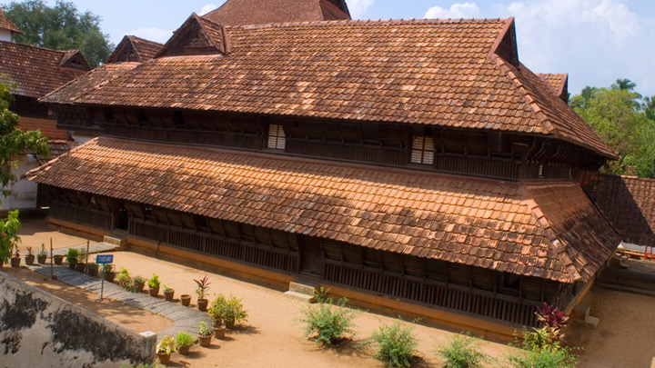
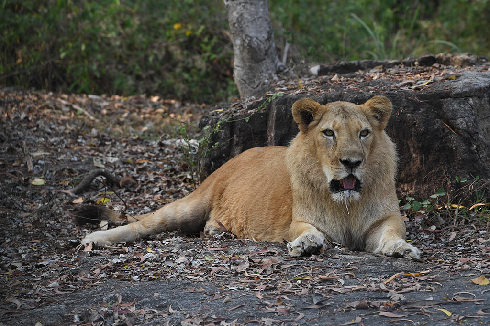

Sree Padmanabhaswamy Temple

Located inside the East Fort in Thiruvananthapuram, the capital city of the State of Kerala in India is the Sree Padmanabha Swamy Temple dedicated to Lord Vishnu. This temple is a blend of the Kerala and Dravidian styles of architecture. It is believed to be the world’s richest temple.The temple architecture stands out for its work in stone and bronze. The temple interiors are adorned by beautiful paintings and murals. Some of them are that of the life-size images of Lord Vishnu in the reclining posture, Narasimha Swamy (half-lion, half man incarnation of Lord Vishnu), Lord Ganapati and Gaja Lakshmi. The temple has a dhwaja stamba (flag post) that is about 80 ft high and is covered with gold plated copper sheets.The temple also has some interesting structural features in the form of Bali Peeda Mandapam and Mukha Mandapam. These are halls, decorated with beautiful sculptures of various Hindu deities. Another structure that captures attention here is the Navagraha Mandapa the ceiling of which displays the navagrahas (the nine planets).
Kovalam Lighthouse Beach

Kovalam is an internationally renowned beach with three adjacent crescent beaches. It has been a favourite haunt of tourists since the 1930s. A massive rocky promontory on the beach has created a beautiful bay of calm waters ideal for sea bathing.The leisure options at this beach are plenty and diverse. Sunbathing, swimming, herbal body toning massages, special cultural programmes and catamaran cruising are some of them. The tropical sun acts so fast that one can see the faint blush of coppery tan on the skin in a matter of minutes. Life on the beach begins late in the day and carries on well into the night. The beach complex includes a string of budget cottages, Ayurvedic health resorts, convention facilities, shopping zones, swimming pools, Yoga and Ayurvedic massage centres.The Lighthouse in the Beach is also a hot favourite. You can climb to the top of the lighthouse through a spiral staircase until you reach the very summit. Here, all your exhaustion melts away as the first breeze gently cradles your face. Couples flock here to take photographs that adorn family albums for a lifetime. It is among the best vantage points to view the coast line in Southern Kerala.
Padmanabhapuram Palace
Around 64 kms from Thiruvananthapuram lies the seat of the erstwhile rulers of Travancore, the Padmanabhapuram Palace. This masterpiece of indigenous Kerala architecture is located at Thuckalay, on the way to Kanyakumari. The wooden palace is well maintained and its murals, fabulous floral carvings and black granite floor continue to astound all who view it to this day. The interiors are beautiful relics with intricate rose carvings and sculptured decor. It has many murals dating back to the 17th and 18th centuries. The mahogany musical bow, windows of coloured mica, royal chairs with carvings from the Far East and the great 'Thaikkottaram', the Queen Mother’s palace with painted ceilings, all add a unique mysticism to the entire place.The Durbar Hall with its shiny black floor made of a combination of egg white, jaggery, lime, burnt coconut, charcoal and river sand is a rare architectural feat. The place also has secret underground passages, the famous medicinal bed in the King’s bedroom, mural paintings, pictures of Lord Krishna, a temple dedicated to Goddess Saraswati, open air swimming baths, fish carvings and hanging brass lanterns that have been continuously lit since the 18th century.
Agasthyakoodam Peak

Agasthyakoodam is nature’s ode to bird watchers. One of the highest peaks in Kerala, it has long been known as a bird watcher’s paradise and many gather here to catch sight of exotic avian species. It can be viewed from near Neyyar Dam as well as Bonacaud. Agasthyakoodam is also known for its remarkable flora and fauna, especially certain rare medicinal herbs which have been discovered here. Over 2000 species including lichens, orchids, mosses and ferns have been recorded in the area.The peak was named after the sage Agasthya and is a popular pilgrim site. A shrine dedicated to him is located here and is frequented by devotees. The air itself is said to have medicinal qualities. The peak is a 90 minute drive with Bonacaud being the last motorable spot. Trekking is restricted as only a few people are allowed to go up the peak.
Neyyar Lion Safari Park
Around 32 km from Thiruvananthapuram, one comes across 12,000 hectares of natural vegetation in the form of the Neyyar Wildlife Sanctuary. It offers a rare chance to view flora and fauna alongside numerous trekking options. People love going up the 1868m high Agasthyamala Peak which is a famous picnic spot as well. The exotic view should not be missed at any cost as the fragile slopes and flat meadows make for an enchanting sight.The Neyyar Dam nearby is also famous due to its many features, chief amongst them being a picturesque picnic spot for families, friends and solo-travellers alike. It boasts of a beautiful Watch Tower, a Deer Park, a Lion Safari Park and a Crocodile Rehabilitation and Research Centre as well. The Neyyar Wildlife Sanctuary of which the dam is a part is the habitat of over a hundred species of fauna including the Asian Elephant, tiger, leopard, Slender Loris and reptiles and amphibians like the King Cobra, Travancore Tortoise, etc. One can avail boating facilities at the reservoir which provides for a beautiful panoramic view of the area.